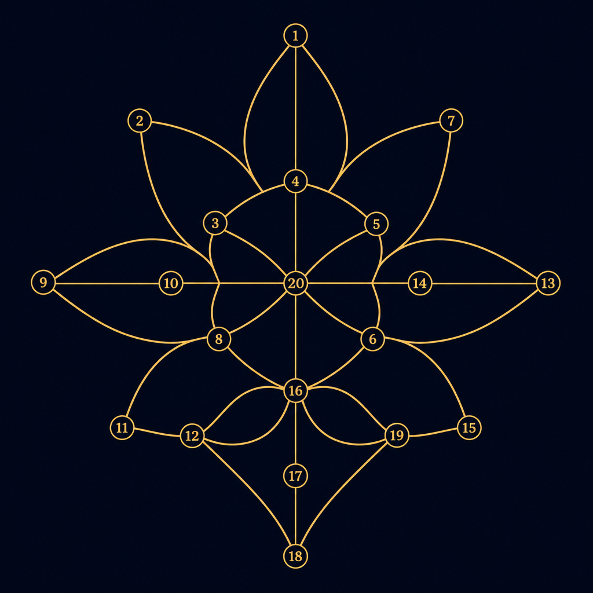

An Interactive Tool for Identifying and Reframing Gendered Bias in BaZi and Astrological Narratives
Xintian Zhang · Lawted Wu · July 2026
A full walkthrough: cosmic design → live site → RQ → literature → users → method → data.
Reframe Destiny treats divination as narrative, not truth. The interface borrows the site's cosmic palette: deep space, gold lotus, jade glow — so users feel inside a reading before they question it.
Click inside the frame: consent → pre-survey → BaZi/astrology journey → post-survey. Data flows to Supabase anonymously.
src → https://reframe-destiny.pages.dev/game/index.html · alt: reframe-destiny.vercel.app
How does an AI-assisted interactive website affect young people's ability to identify and reframe gendered narrative bias in BaZi and Western astrological readings?
After using Reframe Destiny, participants will show increased bias awareness and greater confidence in reframing gendered fate-talk.
Why: fortune-telling is a narrative industry — the same chart reads ambition for men and 「ke-fu」 for women.
Three anchors: gender as narrative, discourse/power, and AI ethics in spiritual media.
Gender as performative repetition — divination restates scripts in second person.
Discourse constrains what can be said — readings make some social roles imaginable.
LLMs can act as narrative authorities — our tool uses AI as critique scaffold, not oracle.
Age 15–35 · has tried BaZi, horoscope, or AI fortune apps · active on WeChat / Xiaohongshu
Classmates · WeChat groups · Xiaohongshu study invites
Ethics: Voluntary · anonymous · no stored birth IDs · exit anytime
5-item Likert
bias awareness, reframe confidence, gender lens, agency, stereotypes
~15 min
Six-step critical literacy flow on live prototype
5-item Likert
Same items · paired change · Supabase logging
IV: exposure to journey · DV: five Likert items + Court of Destiny text
31 raw rows → 11 sessions → 6 journeys → 3 paired pre/post. Descriptive stats only.
11 independent sessions (after dedup)
ΔM +1.0 on bias awareness & reframe confidence (N=3). Personal agency ΔM −0.33 — seeing bias ≠ talking back.
Fortune-telling can stay — bias must be named.
Xintian Zhang · reframe-destiny.pages.dev
Generation AI 2026 · Lawted Wu